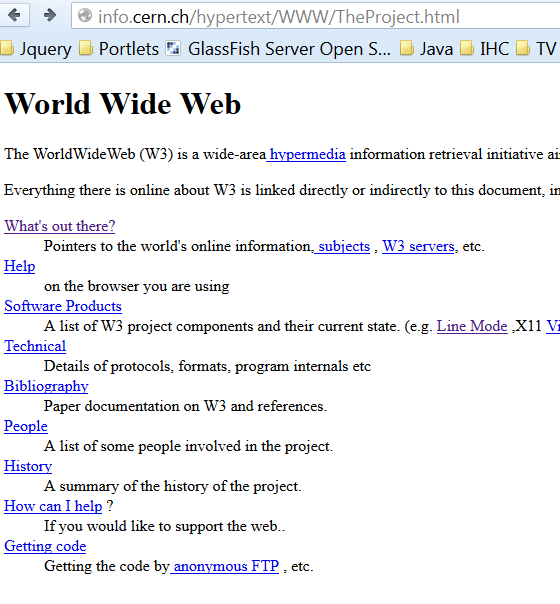
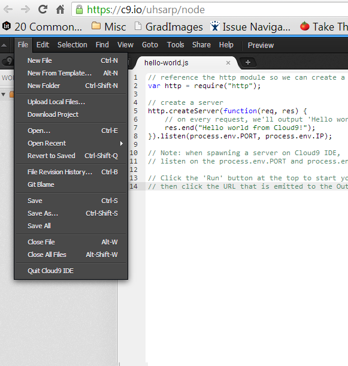
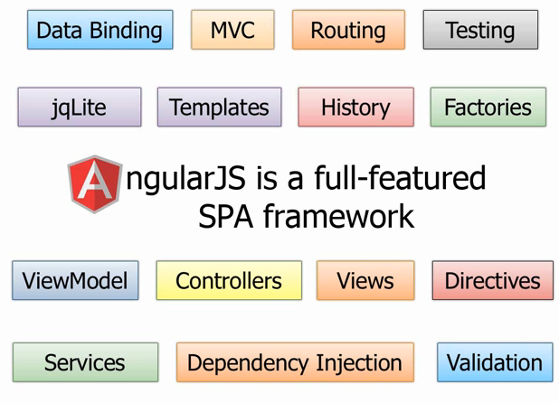
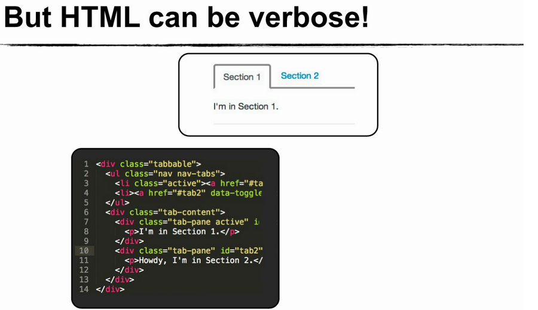
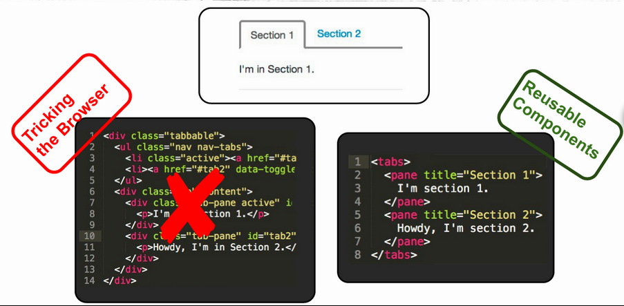

Superheroic JavaScript MVW Framework
Prashanth Batchu
June 11, 2013
Agenda
- Why use Angular?
- Angular Core Features
- Two-way Data Binding, Directives
- Examples
- Best Practices
- Resources
- Q&A
Motivation for creating Angular
|  1993 |  The present |
Users want Desktop style apps
- HTML was originally designed to show static documents on the web.
- But we want Desktop style apps. We get then by either
- Abstracting away HTML, CSS, and/or JavaScript (GWT, Vaadin etc)
- Manipulating the DOM (JQuery)
- Neither of these address the root problem that HTML was not designed for dynamic views.
DOM manipulation is bad for you!
What do we lose?
- End to end testing capabilities
- Maintainability
- Reusability
What is Angular Anyway?
“AngularJS is a structural meta framework for developing modern dynamic web applications”
Angular's core features
- Directives and Filters
- Two-way data binding
- Views, Controllers, Scope
- Modules and Routes
- Testing
Angular supports Two way Data Binding


- Data-binding: Automatic synchronization of data between the model and view components.
- Treat the model as the single-source-of-truth in your application.
- The view is a projection of the model at all times. When the model changes, the view reflects the change, and vice versa.


Directives
Directives
Examples


Type in your Name
Dependency Injection
DI in controllers
var MyController = function($scope, dep1, dep2) {
...
$scope.aMethod = function() {
...
}
}
MyController.$inject = ['$scope', 'dep1', 'dep2'];
Factory Methods
angular.module('myModule', []).
config(['depProvider', function(depProvider){
...
}]).
factory('serviceId', ['depService', function(depService) {
...
}]).
directive('directiveName', ['depService', function(depService) {
...
}]).
filter('filterName', ['depService', function(depService) {
...
}]).
run(['depService', function(depService) {
...
}]);
Angular JS Module Example DEMO
Testing
...
it('should render phone specific links', function() {
input('query').enter('nexus');
element('.phones li a').click();
expect(browser().location().url()).toBe('/phones/nexus-s');
});
...
Debugging
Best Practices

Yo scaffolds out a new application, writing your Grunt configuration and pulling in relevant Grunt tasks that you might need for your build.
Grunt is used to build, preview and test your project, thanks to help from tasks curated by the Yeoman team and grunt-contrib.
Bower is used for dependency management, so that you no longer have to manually download and manage your scripts.
Resources
The End
is the beginning for something new